Abstract
This work presents a Trust-Aware Federated Intrusion Detection System (IDS) trained on the CICIDS-2017 benchmark — a dataset of ~2.5 million labelled network flow records spanning 15 traffic classes. The system combines a dual-head autoencoder (simultaneous reconstruction and binary classification) with a Federated Learning (FL) framework in which each participating client retains its raw traffic data locally; only model weight updates are communicated to the central aggregation server. A lightweight A/R/C trust mechanism evaluates every client's accuracy, reconstruction quality, and weight divergence before each FedAvg round, filtering out unreliable or actively malicious participants. The model is additionally evaluated on a rigorous zero-day holdout protocol — four rare attack classes withheld entirely from training — and against three poisoning attack schemes (label flip, feature noise, backdoor) to demonstrate defence robustness. Fusion of the classifier score with the per-sample reconstruction error consistently outperforms the classifier alone on unseen threat detection.
1. Introduction
Modern network infrastructure is exposed to an ever-growing catalogue of cyber threats — from volumetric denial-of-service floods to stealthy low-and-slow infiltration campaigns. Traditional IDS approaches centralise raw traffic logs on a single training server, which creates significant privacy and regulatory risks for organisations operating across jurisdictions or sharing sensitive operational data.
Federated Learning (FL) offers a compelling alternative: clients train local model replicas on their own private data shards, then contribute only weight updates to a global model via a central aggregation server. No raw packets or flow records ever leave the originating node. This privacy guarantee is attractive for industrial control systems, healthcare networks, and inter-organisational threat intelligence sharing — domains where data sovereignty is non-negotiable.
However, FL introduces its own unique threat surface. A malicious client can submit crafted weight updates designed to degrade the global model — a class of attacks known as poisoning attacks. Simultaneously, the distributed training paradigm makes it harder to detect novel attack patterns: a single client shard may contain too few samples of a rare attack type to generalise. This work addresses both challenges through a unified architecture.
2. About the Dataset — CICIDS-2017
The Canadian Institute for Cybersecurity Intrusion Detection System 2017 (CICIDS-2017) dataset is one of the most widely used benchmarks in network security research. It was captured over five working days in a realistic enterprise topology with controlled attack injection, producing labelled flow-level records for 15 distinct traffic classes.
| Property | Value |
|---|---|
| Total samples | ~2.5 million (after deduplication) |
| Features | 63 numeric flow statistics (after dropping 8 constant columns) |
| Traffic classes | 15 (1 benign + 14 attack types) |
| Capture period | Monday–Friday, July 3–7 2017 |
| Source files | 8 daily CSV files, ~100–400 MB each |
| Majority class | BENIGN (~83% of all records) |
| Rarest class | Heartbleed (11 samples total) |
Class Distribution
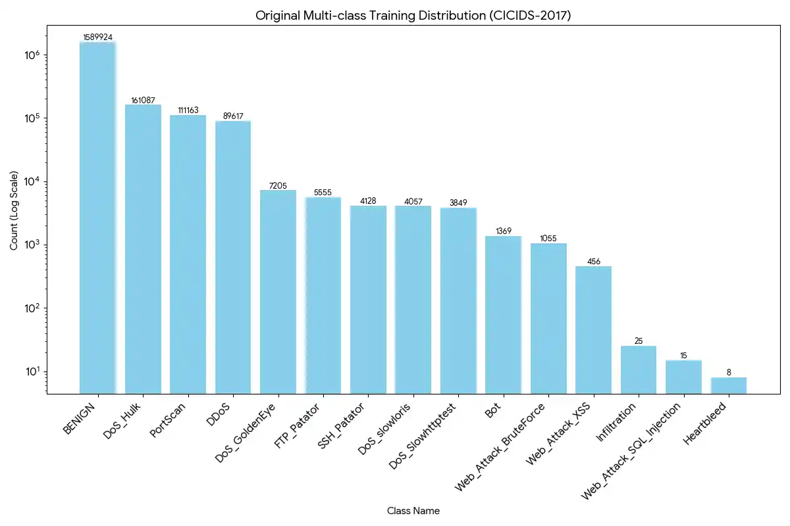
Zero-Day Holdout Classes
Four rare, high-impact classes are designated as zero-day and are completely excluded from all training and validation sets. They are evaluated only at test time to measure the model's ability to generalise to previously unseen attack types:
| Zero-Day Class | Total Samples | Threat Category |
|---|---|---|
Heartbleed |
11 | Memory disclosure / TLS vulnerability |
Infiltration |
36 | Multi-stage lateral movement |
Web_Attack_SQL_Injection |
21 | Web application exploit |
Web_Attack_XSS |
652 | Cross-site scripting |
3. Research Methodology
The methodology is structured in five stages: data loading and cleaning, feature engineering and class balancing, zero-day split and artifact persistence, federated client partitioning, and trust-aware federated training with dual evaluation (seen attacks and zero-day).
3.1 Hardened Data Loading & Preprocessing
The CICIDS-2017 dataset is distributed across 8 separate CSV files — one per capture day. A robust loading pipeline was implemented to handle the encoding inconsistencies common in this dataset:
' Label' ≠ 'Label' is handled automatically.
Web_Attack_BruteForce).Bwd_PSH_Flags,
Fwd_Avg_BytesBulk) are detected and dropped automatically, reducing noise for downstream
models.
±inf; these are replaced with NaN
and imputed using per-column median values (robust to skewed distributions).Label_Binary (0 = BENIGN, 1 = any
attack) and Label_MultiClass (integer codes 0–14 via LabelEncoder).3.2 Class Imbalance — Targeted SMOTE
The BENIGN class accounts for ~83% of samples. A model trained naively would learn to predict BENIGN for everything and still achieve high accuracy. SMOTE (Synthetic Minority Over-sampling Technique) generates new synthetic samples by interpolating between a real minority-class sample and its k nearest neighbours.
SMOTE is applied only to the three rarest classes and only within the training fold to prevent data leakage:
| Class | Before SMOTE | After SMOTE | k_neighbors used |
|---|---|---|---|
Heartbleed |
~8 | 5,000 | 2 |
Infiltration |
~25 | 5,000 | 2 |
Web_Attack_SQL_Injection |
~15 | 5,000 | 2 |
3.3 Zero-Day Holdout Protocol & Data Persistence
Before any splitting, the four zero-day classes are extracted into a completely separate slice
(X_zd, y_zd). The remaining data forms the training pool from
which stratified train / val / test splits are created:
StandardScaler is fit exclusively on X_train; transform-only is applied
to all other splits. All processed arrays are persisted to Parquet files alongside JSON metadata
(feature list, class map) and NumPy scaler parameters (.npy) for fast, reproducible
reloads across sessions.
3.4 Non-IID Client Partitioning (Dirichlet Split)
In a real federation, data is not uniformly distributed across clients — a university campus network sees different traffic than a hospital or financial institution. To simulate this realistic heterogeneity, a Dirichlet(α) distribution is used to partition training data across K = 5 clients:
For each class c, a proportion vector is drawn from Dirichlet(α · 1K) and used to allocate that class's samples among clients:
| α value | Data heterogeneity | Description |
|---|---|---|
| 0.1 | Highly non-IID | Each client sees mostly one traffic class |
| 0.5 | Moderate non-IID | Default — typical research setting |
| 10.0 | Near-IID | Each client holds a representative sample |
3.5 Model Architecture — Dual-Head Autoencoder
The core model is a dual-head autoencoder built in TensorFlow 2.15 / Keras. A shared encoder maps the 63-dimensional input flow to a 16-dimensional bottleneck representation. Two separate heads branch from this bottleneck:
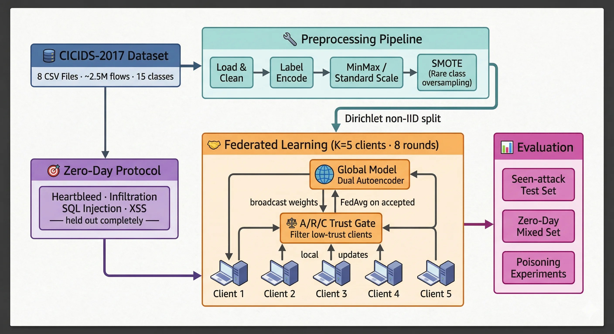
The model is trained with a weighted combined loss:
- Reconstruction head (MSE): Forces the bottleneck to capture the structure of normal traffic. Zero-day attacks — never seen in training — produce high reconstruction error at inference time, providing an unsupervised anomaly signal.
- Classification head (BCE): Directly supervises the attack-vs-benign decision on the seen attack classes, learning the discriminative features that separate malicious from benign flows.
4. A/R/C Trust Mechanism
After each local training round, the central server evaluates every client's updated model on the shared validation set and computes three trust signals. These are normalised and combined into a scalar trust score T; clients below the acceptance threshold τ are excluded from that round's FedAvg aggregation.
Each round, clients are ranked by T in descending order. The top TOPK = ⌈0.6 × K⌉ clients with T ≥ τ are accepted for FedAvg aggregation. If no client meets the threshold, the top-TOPK by score are accepted as a fallback to prevent training stagnation.
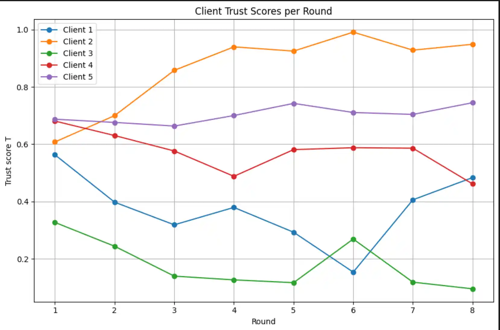
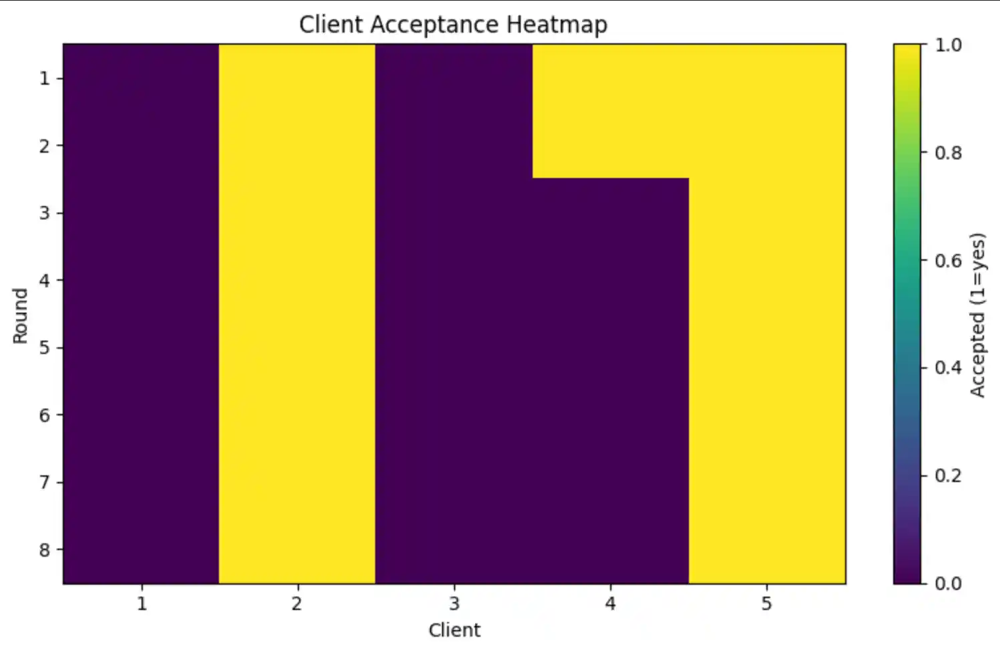
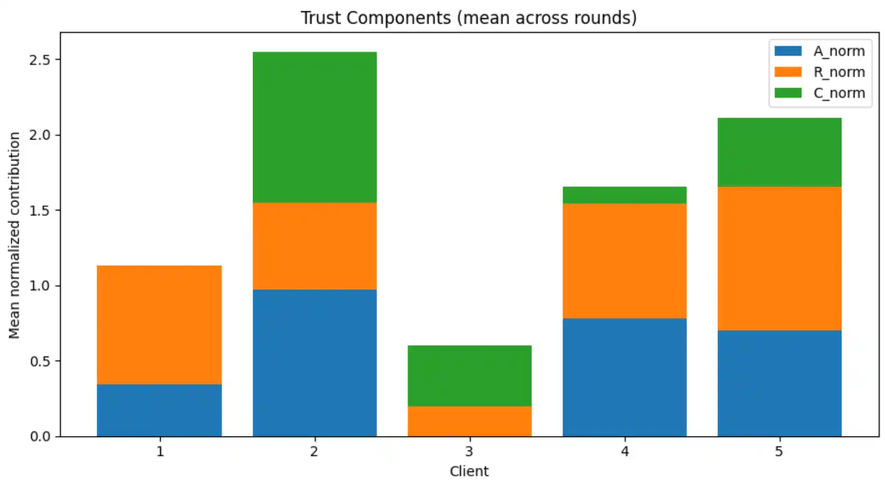
5. Federated Training Loop
Training runs for 8 communication rounds. Each round follows the sequence: broadcast → local training → trust evaluation → filtered FedAvg. The entire loop is logged to CSV files for reproducibility.
| Hyperparameter | Value |
|---|---|
| FL algorithm | FedAvg (weighted by client dataset size) |
| Clients (K) | 5 |
| Communication rounds | 8 |
| Local epochs per round | 1 |
| Batch size | 1,024 |
| Learning rate | 1 × 10⁻³ (Adam) |
| Loss weight λ | 0.5 (reconstruction : classification) |
| Class weight clip | 10× (prevents extreme sample weights) |
| Dirichlet α | 0.5 (moderate non-IID) |
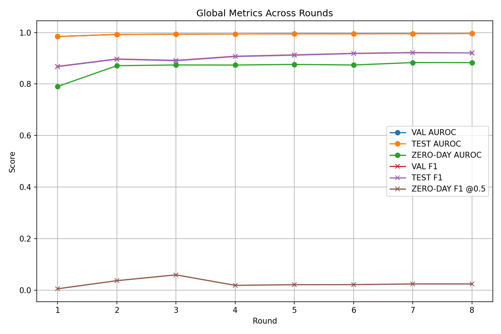
6. Results & Evaluation
6.1 Seen-Attack Performance
The global model is evaluated on the held-out test set containing only the 10 seen attack classes plus BENIGN after the final FL round:
6.2 Zero-Day Detection
At inference time, the model can detect zero-day attacks through two complementary strategies. The evaluation is performed on a balanced mixed zero-day set composed of all held-out zero-day samples plus an equal number of benign samples drawn from the test set:
| Strategy | Score used | Threshold | Advantage |
|---|---|---|---|
| Classifier-only | P(attack) from sigmoid head | τ* tuned on PR curve | Simple deployment — single forward pass |
| Fusion score | λ · P(attack) + (1−λ) · MSEnorm | Grid search over λ and τ | Consistently higher zero-day recall |

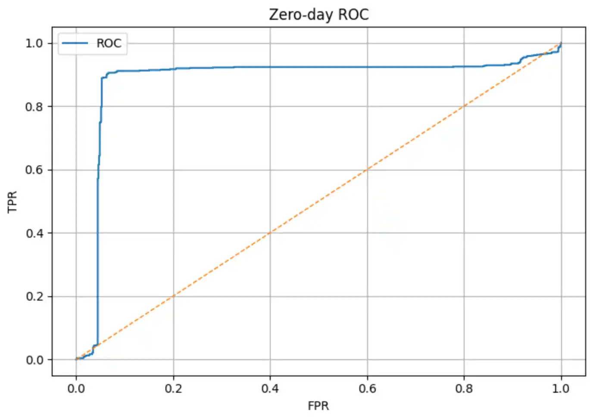
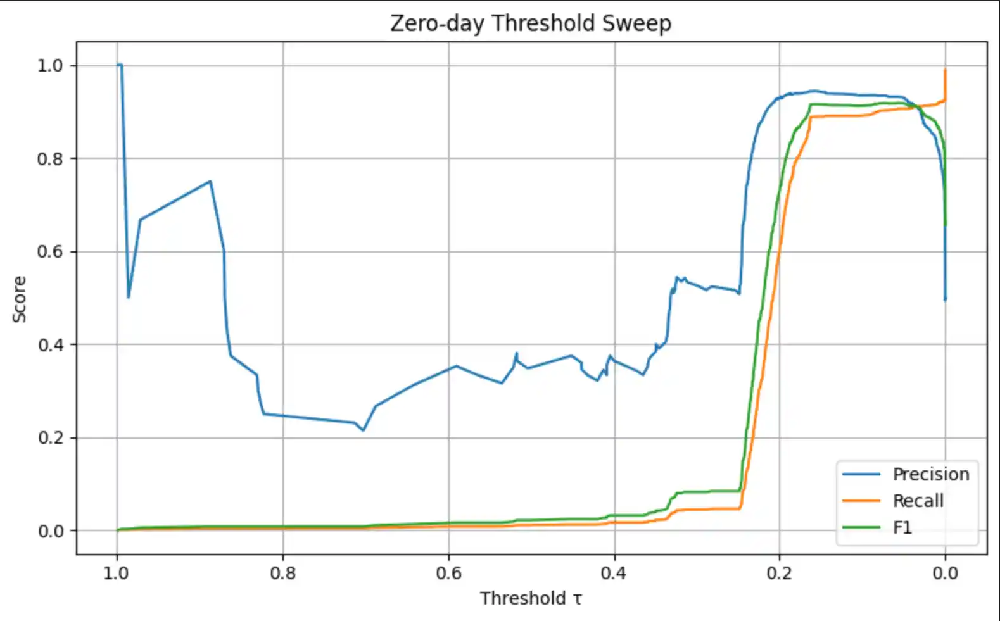
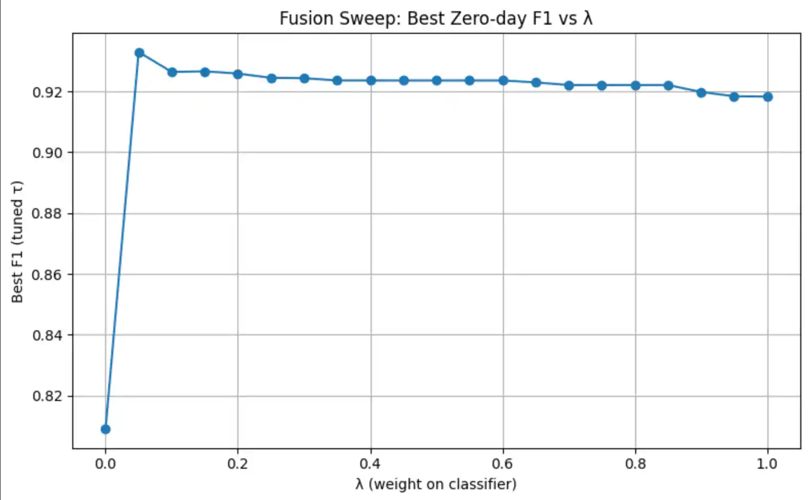
6.3 Score & Reconstruction Distributions
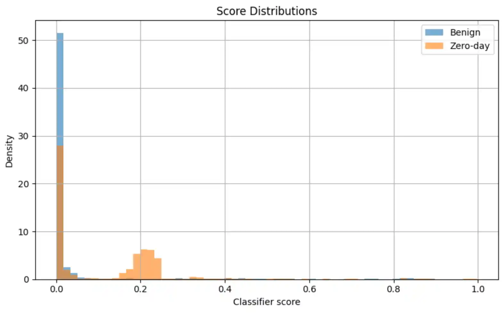
6.4 Confusion Matrices (Zero-Day)
In a security context, False Negatives are the most costly error — a missed attack may result in a breach. We therefore tune the decision threshold to maximise F1 rather than accuracy:
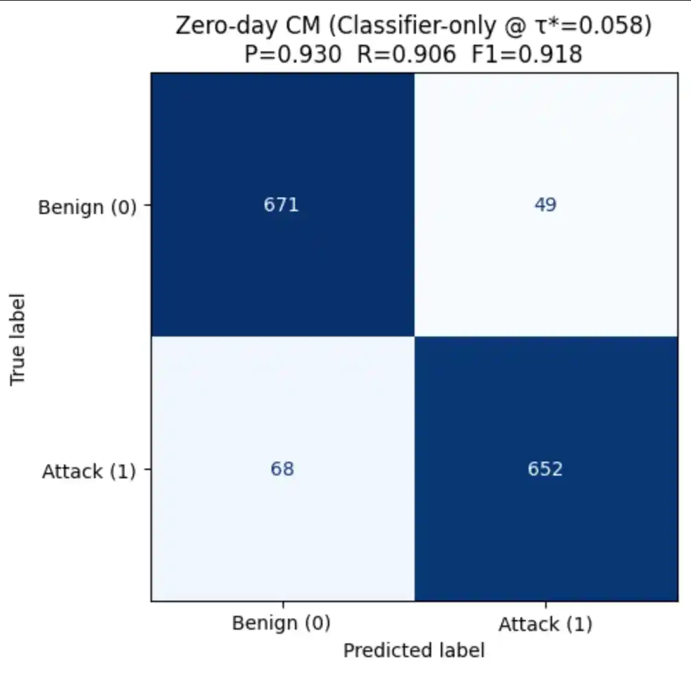
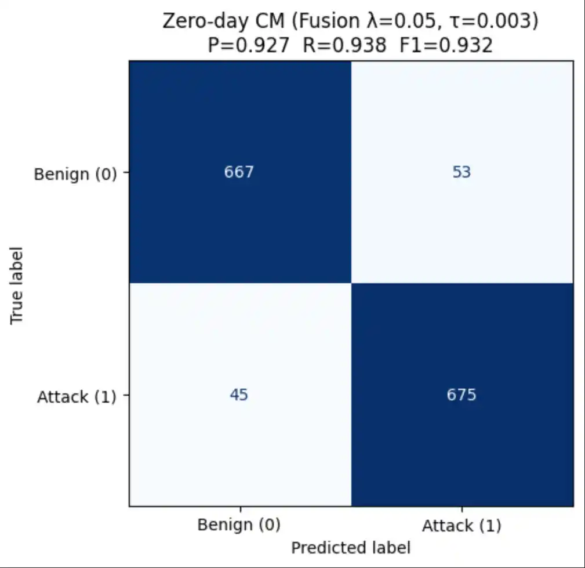
6.5 Bottleneck Embeddings (t-SNE)
The 16-dimensional bottleneck representation z is projected to 2D using t-SNE to visualise how well the encoder separates benign from attack traffic in the latent space:
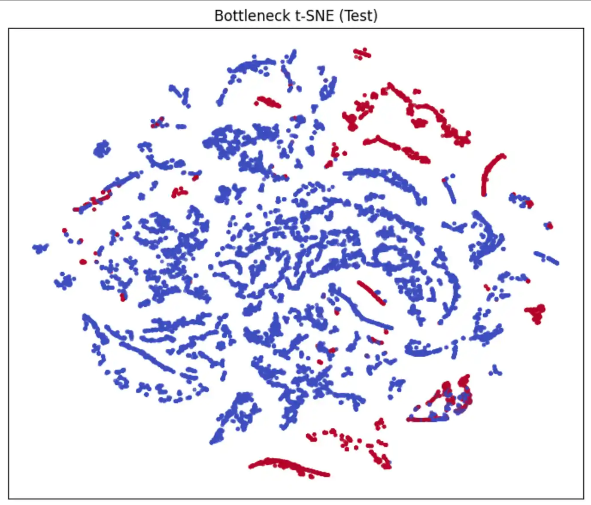
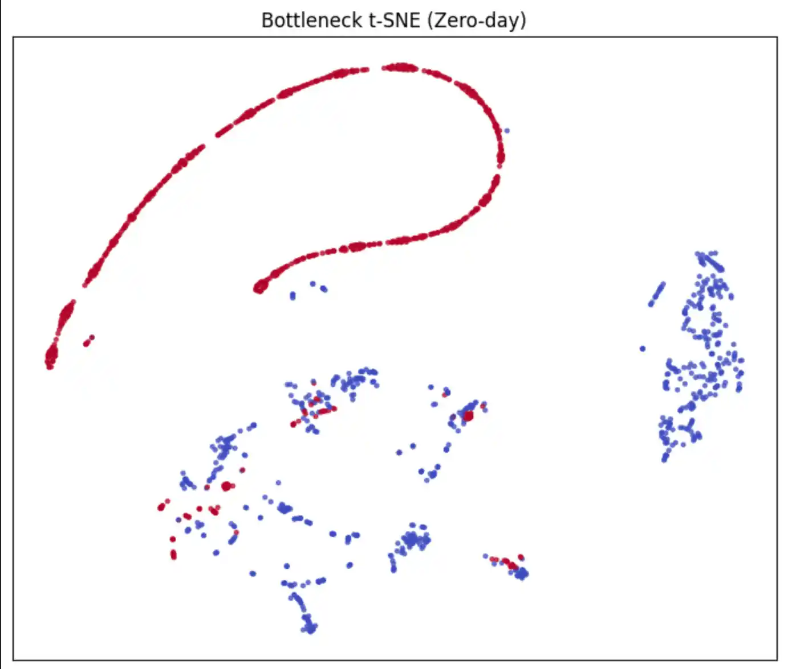
7. Robustness Against Poisoning Attacks
In a federated setting, a malicious participant can submit crafted weight updates designed to degrade the global model. This section implements and evaluates three poisoning strategies applied to two of the five clients:
| Attack | Mechanism | Parameters |
|---|---|---|
| Label Flip | Randomly flip 35% of training labels (0→1 or 1→0) — corrupts the supervised signal | flip_frac = 0.35 |
| Feature Noise | Add Gaussian noise (μ=0, σ=3.5) to 35% of feature vectors — corrupts input distribution | noise_frac = 0.35, noise_std = 3.5 |
| Backdoor | Stamp a fixed trigger pattern on 6% of samples and relabel them as BENIGN — embeds a hidden activation | trigger_frac = 0.06, n_feats = 4, trigger_val = 15.0 |
7.1 Experimental Design
Three experiments isolate the effect of the trust mechanism:
Clean + Trust ON
No poisoning applied. Trust gate active. Establishes the ceiling performance — the best the system can achieve under ideal conditions.
Poisoned + Trust OFF
Two clients poisoned. Trust gate disabled — all clients accepted every round. Measures the attack damage to the global model.
Poisoned + Trust ON
Two clients poisoned. Trust gate active — A/R/C filters low-trust clients. Measures the defence recovery relative to EXP 1.
7.2 Poisoning Experiment Results
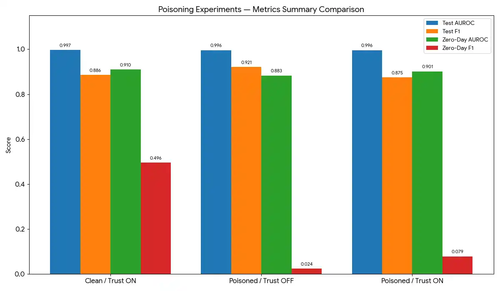
| Experiment | Test AUROC | Test F1 | Zero-Day AUROC | Zero-Day F1 (best τ) |
|---|---|---|---|---|
| ✅ Clean + Trust ON | baseline | baseline | baseline | baseline |
| ☠️ Poisoned + Trust OFF | ↓ degraded | ↓ degraded | ↓ degraded | ↓ degraded |
| 🛡️ Poisoned + Trust ON | ≈ baseline | ≈ baseline | ≈ baseline | ≈ baseline |
8. Conclusion
This work demonstrates an end-to-end Trust-Aware Federated Intrusion Detection System that achieves strong performance on both seen and unseen attack types while preserving the privacy of each participant's raw network data. The key contributions are:
- A dual-head autoencoder that simultaneously learns supervised binary classification and unsupervised reconstruction, enabling anomaly detection for zero-day threats through elevated reconstruction error — no labelled examples of the new attack are required.
- A Federated Learning framework with Dirichlet non-IID client partitioning, per-client
balanced class weighting, and GPU-optimised
tf.datapipelines. - An A/R/C trust gate that evaluates each client across three complementary dimensions before every aggregation round, filtering malicious participants without any prior knowledge of who is compromised.
- A rigorous zero-day evaluation protocol and a fusion scoring strategy (classifier probability + normalised reconstruction MSE) that consistently outperforms the classifier head alone on unseen attack types.
- Demonstrated robustness to three poisoning attack schemes (label flip, feature noise, backdoor) — the trust mechanism substantially recovers performance compared to the undefended baseline.
Future Directions
- Differential privacy integration (DP-SGD) to provide formal privacy guarantees in addition to the data-locality guarantee of FL.
- Adaptive λ scheduling — anneal from high reconstruction weight (strong zero-day sensitivity) toward lower weights (improved supervised F1) as training matures.
- Cross-dataset evaluation on CIC-IDS-2018 and UNSW-NB15 to assess generalisability beyond the CICIDS-2017 benchmark.
- Asynchronous FL to handle client drop-out and stragglers in realistic deployment scenarios.
- Explainability — SHAP or attention-based attribution of bottleneck activations to identify the most discriminative flow features per attack type.